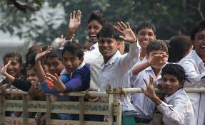

People's Education Trust was formed in 2010 with a view to spreading education, knowledge, awareness and awakening among children and youth of India in general, and of Jharkhand in particular. It was founded by a group of social activists who had dedicated themselves to the cause of the society since their teens.
The target is simple - assist children and youth belonging to economically challanged sections to gain knowledge through formal and informal education, provide them vocational and personality development skills, eventually instil in them courage and character to face the world and make a change in their surroundings. continue reading